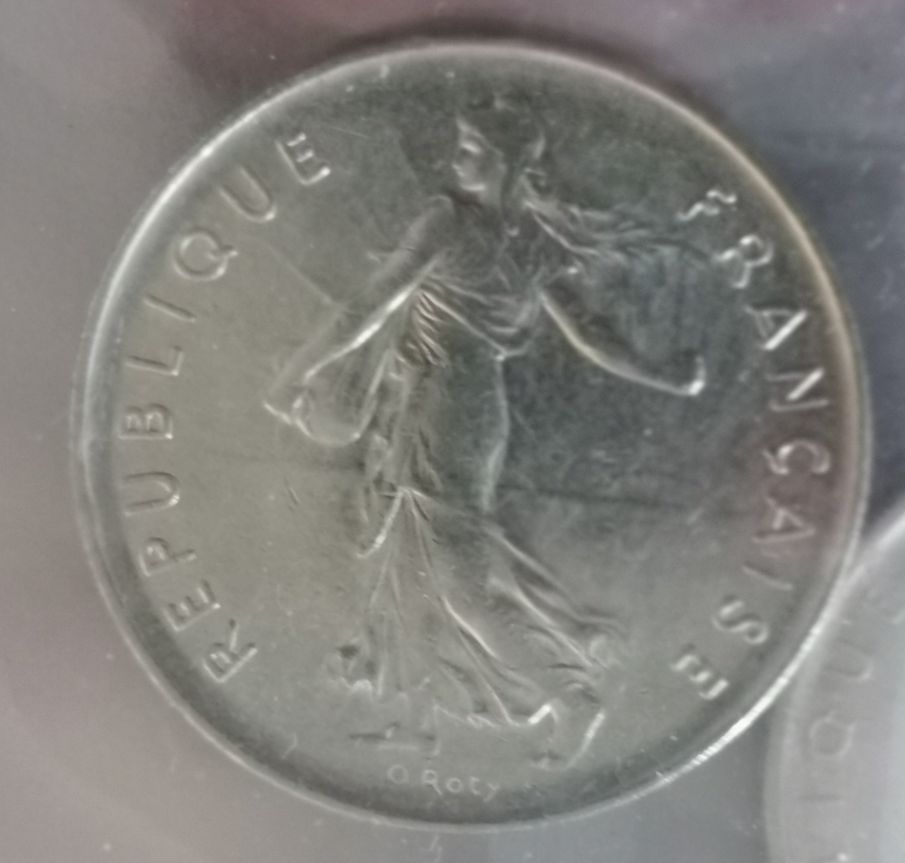
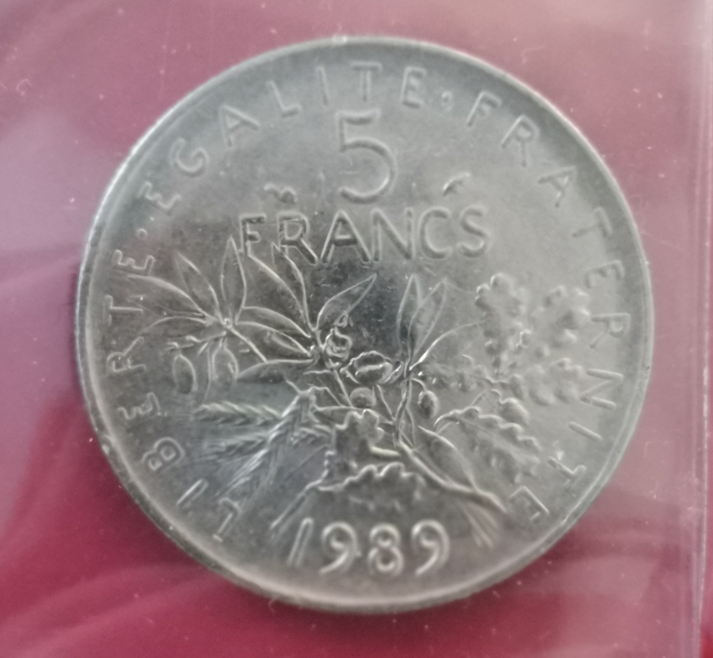
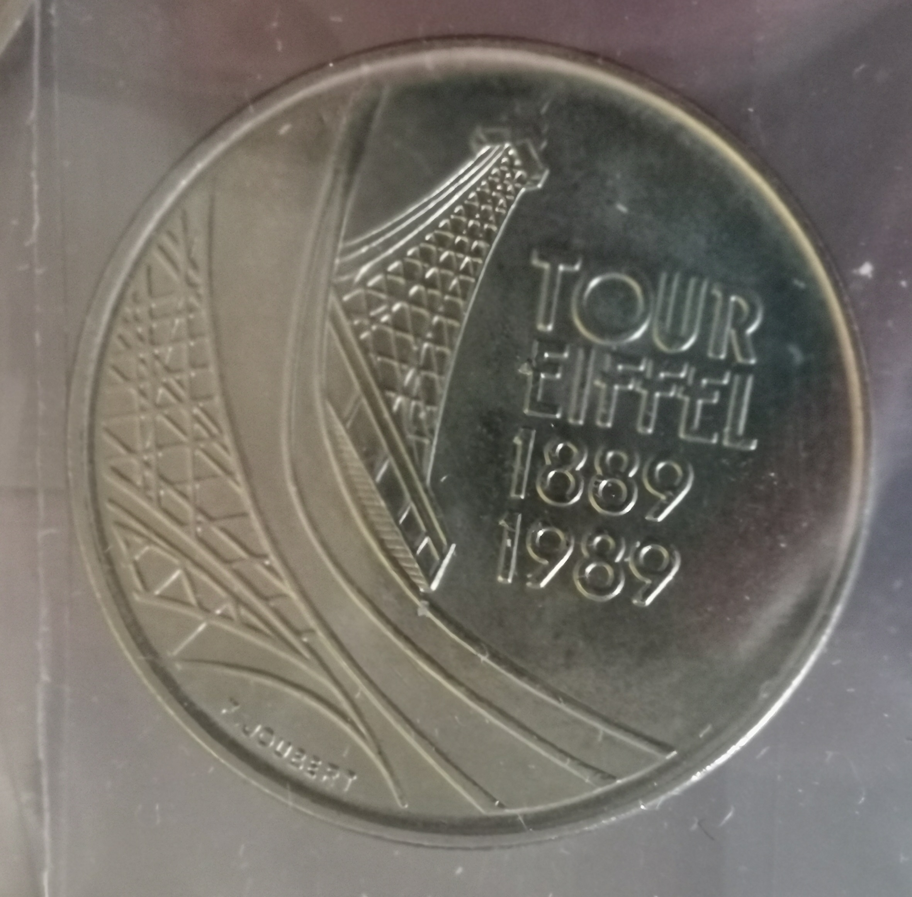
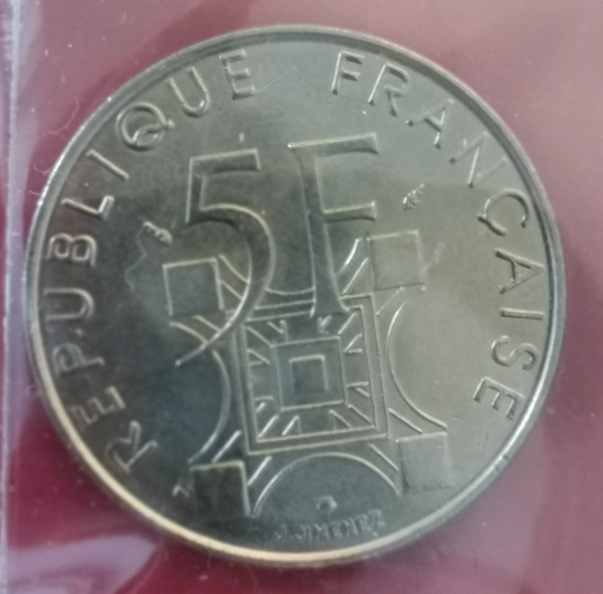

| Métal | Pureté métal | Masse monnaie | Masse métal pur | Diamètre | Années de production | Tranche | Tirage | Avers | Revers |
|---|---|---|---|---|---|---|---|---|---|
| Argent | 835 ‰ | 12 g | 10 g | 28,98 mm | 1959 (essai) puis 1960 - 1969 (en circulation) | En relief : LIBERTE * EGALITE * FRATERNITE *** | Tirage |
|
|
| Cupronickel | Cuivre 750‰ et Nickel 250‰, plaqué nickel | 10 g | N/A | 28,98 mm | 1970 - 2001 (seulement certaines années ont circulé) | Striée | Tirage |  |  |
| Cupronickel | Cuivre 750‰ et Nickel 250‰, plaqué nickel | 10 g | N/A | 28,98 mm | 1989 | Striée | Tirage |  |  |